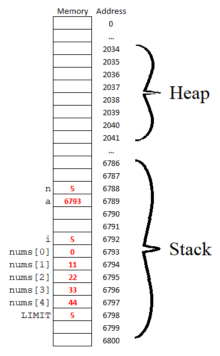

In this course, we will be performing experiments -- most of the time, our experiments will be done using the C language, and rarely we'll use the Java language. In this lab, we will become familiar with some C programming.
C is a general purpose language which has features of a high-level procedural language, and yet allows some low-level operations as well. Many operating systems are written in C. In particular, most of the UNIX operating system utilities are written in C, so we will be using this language when we wish to experiment with UNIX and its utilities.
Our Sun UNIX system is using SunOS 5.9, also known as Solaris 9
(verify this with the uname command with and without the
-r option)
There are no C manuals or references included with the system. But, the man pages give some information:
$ man gcc(To exit from either of the above, type q for "quit".)
man page about how to use gcc
$ man math
man page about the C library of math functions and constants
$ gcc -o myprog myprog.c -lm
This command says to compile the C source file called myprog.c,
using (in addition to the standard libraries) the math library (-lm),
and
put the executable program into a file called myprog (-o
myprog).
Another example:
$ gcc -g myfile.c myotherfile.o
This command says to compile the C source file called myfile.c,
and link it with the object file (previously compiled) called myotherfile.o.
No output file was specified, so the executable program will be
placed into a file called a.out, by default. The -g
switch tells it to prepare the program for use in the debugger, gdb.
Yet another example:
$ gcc -c mytest.c
This command says to compile the C source file called mytest.c,
but don't prepare an executable program. Instead, prepare an object
file called mytest.o (which we may later link with other
object files, or include in a gcc command).
And the most basic way to compile and create an executable:
$ gcc mytest.c
This command says to compile the C source file called mytest.c,
and prepare an executable program called a.out. To run
your program you would then just type a.out on the command
line.
If a program crashes, a copy of part of the corresponding process
is saved as a file called core. This has its uses, but
for now you can consider it junk and delete it when it occurs
(it's a large file).
Arrays
Basic arrays in C are different from arrays in Java. Whereas an array in Java is an object, arrays in C are just pointers (actually pointer constants). Consider the following C program:#include <stdio.h>
void printMyArray(int *a, int n);
int main() {
int const LIMIT = 5;
int nums[LIMIT];
int i;
for(i=0; i<LIMIT; i++) {
nums[i] = i * 11;
}
printMyArray(nums,LIMIT);
return 0;
}
void printMyArray(int *a, int n) {
int i;
for(i=0; i<n; i++) printf("%d\n",a[i]);
}
Let's look at this code line-by-line.
The second line of the program:
void printMyArray(int *a, int n);
is a function header without the body. Why is it there? The answer
has to do with the way the C compiler processes a C program.
The C compiler reads the code from top to bottom. As it reads
each word it needs to recognize the word. Words such as int,
void, const, and for are keywords
that are built into the language and are therefore automatically
recognized. Words (i.e. identifiers) such as LIMIT,
nums, i, and printMyArray are words
that we made up and are therefore unrecognized by the compiler.
Any time we make up a word, we have to tell the compiler what type
of word it is. And, we have to do this the first time the compiler
sees the word, otherwise the compiler will give us an error
message indicating that it doesn't recognize the identifier.
This means that the first time an identifier appears in a
program, it has to be in a declaration statement. We are somewhat
comfortable with this notion when we code the contents of Java
methods. However, Java doesn't seem to require the methods of a
class themselves be declared "before" they are used in other
methods. By "before" I mean above in the text document of
the code. The reality is that Java does require
identifiers be declared before they are used, but Java's compiler
does an initial scan over your code looking for declarations of
methods (and variables at the class level) so that it can make a
comprehensive list of identifiers. It does this extra pass before
it compiles the code of each method.
So, the reason we need the second line of the of the program is because we decided to code the printMyArray() function at the bottom of the file. Since the main() function uses the the printMyArray() function before the printMyArray() function is declared, the compiler would not have known what the printMyArray identifier is and it would therefore have given us an unrecognized identifier error. Forward declaring functions in this manner is quite common in C to let the compiler know the signature of a function before it is coded. This type of line is often referred to as a "prototype" as it makes it clear to the compiler how the function is allowed to be used. The prototype in the above program says the function can be called in a void context and it must take exactly two parameters - the first must be an int pointer and the second must be an int value.
The first line of the main function declares a constant called LIMIT.
The syntax is similar to Java and we also follow the convention of
using uppercase letters for the identifier.
The statement "int nums[LIMIT];" declares an array
variable called nums and allocates the space associated
with the array (space for 5 int values) in the Stack
area of memory. This is different from Java. Although an array
reference variable is on the Stack in Java, the space for the 5 ints
is stored in the Heap of memory in Java. We could have
allocated the space for our C array from the Heap, but "int
nums[LIMIT];" is not the syntax to do that. We will learn
how to allocate an array from the Heap later. For now,
let's continue looking at the above program.
The for loop shows that using an int array is
just like Java in terms of access and assignment.
Let's now consider the "printMyArray" function which
takes an int address (i.e. an int pointer) as
well as an int value. Just like Java, all variables are
passed into functions By Value. This means the local
variable "a" stores a copy of the address that is passed
into the function when it is called. Similarly, "n" is a
local variable that stores a copy of the int value that
is passed into the function when it is called. Remember, that "local
variable" means local to the function in which the
variable is declared. Most of the time, in C, when a function
accepts an array as a parameter, you also need to pass in an int
value indicating the size of the array. Since C arrays are just
pointers, there is no other mechanism we can use in C to know the
length of an array. This contrasts Java arrays which have a length
property that can be used to know the number of elements of the
array. Recall that this is possible in Java since arrays are
objects in Java.
Some Memory Concepts
Let's start by taking a look at how Java would declare an array:
int nums[] = new int[LIMIT]; // This is Java code
In Java, the reference variable, nums (which is similar
to a pointer), is located on the Stack area of memory and
it does NOT store the elements of the array. Instead, it stores
the location (address) of an Array object. The Array object itself
is located in another area of memory called the Heap. In
Java, the new operator requests that space be allocated
from the Heap (in the above case, enough space for 5 ints).
Space used for variables in the Stack area of memory goes back to
the system (as memory that is eligible to be reused) once the
function that allocated the memory comes to an end. On the other
hand, data that is allocated on the Heap area of memory persists
beyond the life of the function that allocated the memory (as long
as the program is still running). In Java, Heap memory is given
back to the system once there are no more reference variables
pointing to it. A so-called garbage collection process is
constantly running in Java programs looking for objects on the
Heap that are no longer referenced by anything.
Although the Stack and Heap exist and are used in identical ways
in both C and Java, there is no garbage collection in C. In C,
when we ask for memory from the Heap (using a C function called malloc(..),
rather than the Java new operator) we will need to give
the memory back explicitly (using the free(..)
function). We will look at the malloc(..) and free(..)
functions a little later.
Here is a memory map model representing the identifiers and memory of the above C program (the memory addresses are just made up):
The identifier nums itself doesn't appear here. So,
what is nums? The variable nums is an int
pointer pointing to the location of nums[0]. If you were
to print the value of nums and the value of &nums[0]
you would see that they are the same value.
We learned in class about the "address of" operator "&"
and the "dereference" operator "*" which are both
important when using pointers. Can we use them with arrays? Yes,
arrays are truly pointers, so anything that you can do with
pointers, you can do with arrays. You just have to remember that
arrays are pointer constants, so once you initialize an
array variable you can't later make it point somewhere else,
whereas regular pointers can be reassigned.
Recall that we can use the dereference operator to get the value
to which a pointer points. This means we can use *nums
to refer to nums[0]. Try it in the program by adding the
statement
*nums = 12345;
just before you call the printMyArray() function. You
will see that the value of nums[0] did change to 12345.
Performing Arithmetic on Pointers
C allows you to add and subtract integer values to pointers. For
example, if p is an int pointer, (p+1)
refers to the address that is one more than p. This
means that if p stores the address 6570, then (p+1)
stores the address 6571. In fact, we can dereference (p+1)
(using *(p+1)) to get the value to which (p+1)
points.
Let's see this in action. Rewrite the last line of the printMyArray()
function so that it looks like this:
for(i=0; i<n; i++) printf("%d\n", *(a+i));
Try recompiling and running it. Notice that it does exactly what
it previously did.
The *(a+i) syntax is a little cumbersome, so the square
brackets syntax a[i] was introduced into the language as
syntactic sugar - just an easier way to express something
that we often need to code. You should always use the square
bracket syntax (i.e. a[i]) as it is much easier to read.
Just as we can add integer values to a pointer to get the next
address, we can also subtract integer values from a pointer in the
same way (e.g. (p-1)) to get the previous address.
Important Notes:
Allocating Heap Memory (The malloc() and free()
functions)
Let's modify the program to accomplish the same thing, but this
time let's allocate the space for the array from the Heap
area of memory.
To allocate memory from the Heap, we use the malloc() function.
The malloc() function takes an integer argument that
indicates the number of bytes you want to allocate. malloc()
finds a contiguous chunk of memory (in the Heap area) of the size
specified, and it returns the address of the first byte that was
allocated. The address that is returned is of data type *void
(a generic address), so we need to cast the address into the
appropriate data type so that we can assign it to a typed pointer
variable.
Here is the original program with the array declared from the
Heap:
#include <stdio.h>
#include <stdlib.h>
void printMyArray(int *a, int n);
int main() {
int const LIMIT = 5;
int *nums = (int*)malloc(LIMIT*sizeof(int));
int i;
for(i=0; i<LIMIT; i++) {
nums[i] = i * 11;
}
printMyArray(nums,LIMIT);
return 0;
}
void printMyArray(int *a, int n) {
int i;
for(i=0; i<n; i++) printf("%d\n",a[i]);
}
Notice that the 5th line of the original code is the only line
that changes. But, because the malloc() function is made
available through the stdlib.h header file, we also
needed to add another #include line.
Also notice the use of the sizeof() operator. We use
this to make the line of code flexible enough to run on all
machines - remember that the size of an int can vary
from machine to machine. sizeof() will return an integer
indicating the number of bytes associated with whatever is passed
as an argument.
Here is a memory map model representing the identifiers and
memory of the above C program:
Memory Leaks
Generally, when you use malloc() in a function, you
need to make sure that you give the memory back to the system when
it is no longer being used. For example, consider these two lines
of code:
int x = 7;
int *p = (int*)malloc(20);
p = &x;
The second line allocates 20 bytes from the Heap and has p
point to its location. The next line has the same variable p
point to a different location. At that point, the program no
longer knows where the location of the 20 bytes of Heap memory is.
The only thing that stored its location (p) has been
overwritten in the third line. That 20 bytes is now lost and we
have no way of finding it. Imagine if that code was in a loop that
could cycle 100s of thousands of times - the program would run
fine for a while but every time the loop cycled, 20 bytes more
would be lost, and after a while we might run low on memory or
even run out of memory. This situation is called a memory
leak and is very bad because it is an error that can
be difficult to detect through user testing.
How do we give back memory allocated through the Heap? Answer:
use the free() function. To fix the above situation, we
would just do this:
int x = 7;
int *p = (int*)malloc(20);
free(p);
p = &x;
You just need to pass the address of the memory allocated through
the Heap into the free() function. The free() function
gives that memory back to the system ready to be reused. However,
we should only use free() if we are sure that we no
longer need the data in that block of memory again.
The fact that we didn't use free() in our program was
not an issue because we are using malloc() in the
main() function. And, we know that when main() ends
our program ends and all the memory the program used goes back to
the system.
Dynamically Allocated Memory
Allocating memory from the Heap allows a program to allocate
memory at run time rather than at the time of compilation. For
example, if my program needs an array, but I don't know the size
of the array when I'm writing the code because it depends on
something that happens as the program runs, I can do this:
int *a = (int*)malloc(X*sizeof(int));
where X will indicate the number of elements needed in
the array. If X equals 10 at the time this statement
executes, the array will be of size 10 and if X is
1000000 at the time, the array will be that size. In other words,
the array is being sized dynamically. Because of this
dynamic nature of Heap allocated data we often refer to Heap
allocated memory as Dynamically Allocated Memory. I will
use this term most of the time.
#include <stdio.h>Here we declare an 8-element char array with the line "char name[8];". Remember that this line associates a contiguous block of memory for the array (on the Stack). Even though we haven't assigned values to it, remember that the memory locations contain some values and we have no idea what those values might be. Next, we put the string "Bob" into the array one character at a time. Notice that we put a NULL character at index 3. The NULL character lets C library functions know where the string ends. These functions would know that the string should be considered the sequence of characters from index 0 to 2. We assigned values to indexes 4 to 7 (W, X, Y, and Z) just so we know that the values would be printable characters for this example.
void printMyArray(char *a, int n);
int main() {
char name[8];
name[0] = 'B';
name[1] = 'o';
name[2] = 'b';
name[3] = '\0';
name[4] = 'W';
name[5] = 'X';
name[6] = 'Y';
name[7] = 'Z';
printf("The value of name is: %s\n", name);
printMyArray(name,8);
return 0;
}
void printMyArray(char *a, int n) {
int i;
for(i=0; i<n; i++) printf("%c\n",a[i]);
}
The value of name is: BobThe first line is generated by the printf() function and it displays the C-style string as we built it. The remaining output comes from our function that prints the contents of the array. This demonstrates that C library functions (such as printf()) that manipulate strings will use the NULL character to know where the end of the string is.
B
o
b
W
X
Y
Z
#include <stdio.h>The line "char name[8] = "Bob";" does the work of assigning 'B', 'o', 'b', and '\0' to the first four elements of the array. It does not bother assigning values to the other elements, so the values of elements 4 to 7 would remain unknown.
void printMyArray(char *a, int n);
int main() {
char name[8] = "Bob";
printf("The value of name is: %s\n", name);
printMyArray(name,8);
return 0;
}
void printMyArray(char *a, int n) {
int i;
for(i=0; i<n; i++) printf("%c\n",a[i]);
}
C Programming Exercises
You will complete three C programming exercises. For each C
program you create, store your program in a separate file (e.g. lab1ex1.c,
lab1ex2.c, and lab1ex3.c). The file name
to use is specified for each exercise. Incorrectly named files
will not be graded and will receive a mark of 0.
You must only use syntax and C functions that have been
covered during lecture and this lab.
$ a.outNotes:
Please enter your first name: Rosalyn
Rosalyn, enter a positive integer (or -1 to quit): 44
Rosalyn, enter a positive integer (or -1 to quit): 55
Rosalyn, enter a positive integer (or -1 to quit): 77
Rosalyn, enter a positive integer (or -1 to quit): -1
The maximum is: 77.00
The minimum is: 44
The average is: 58.667
The sum is: 176
The median is: 55.0
$
$ a.out
Please enter your first name: Agnes
Agnes, enter a positive integer (or -1 to quit): 44
Agnes, enter a positive integer (or -1 to quit): 55
Agnes, enter a positive integer (or -1 to quit): 76
Agnes, enter a positive integer (or -1 to quit): 89
Agnes, enter a positive integer (or -1 to quit): 100
Agnes, enter a positive integer (or -1 to quit): 111
Agnes, enter a positive integer (or -1 to quit): -1
The maximum is: 111.00
The minimum is: 44
The average is: 79.167
The sum is: 475
The median is: 82.5
$
Remember that you will need to include a prototype for sortInt() before your main() function.
oksun7$ cp ~akennedy/submitak ~This command says "copy the file submitak from akennedy's home directory to my home directory". Note the use of the tilde (~) character which UNIX uses to indicate the home directory of the user.
Once you've got the submitak script, you will use it
throughout the semester to send me your completed work. You don't
have to copy it again (unless you accidentally delete it). To
submit your files, do this:
oksun7$ submitak lab1ex1.c lab1ex2.c lab1ex3.c
If you submit a file and later realize that you'd like to submit a newer (improved) version, simply submit it again. The new copy will overwrite the old copy in my file space. You can do this up until the due time.If you want to check to see what files you have submitted, do this:
oksun7$ ls ~akennedy/student/yourUserNameEach of you has an individual directory in my file space. Only you and I have access to that directory.
Shortly after the due date and time, I will run another UNIX
script which will collect and run your work. Make sure you have
submitted your work prior to the due date and time. If you make
improvements after the due date and time, they will not be
included in the marking of your assignment.